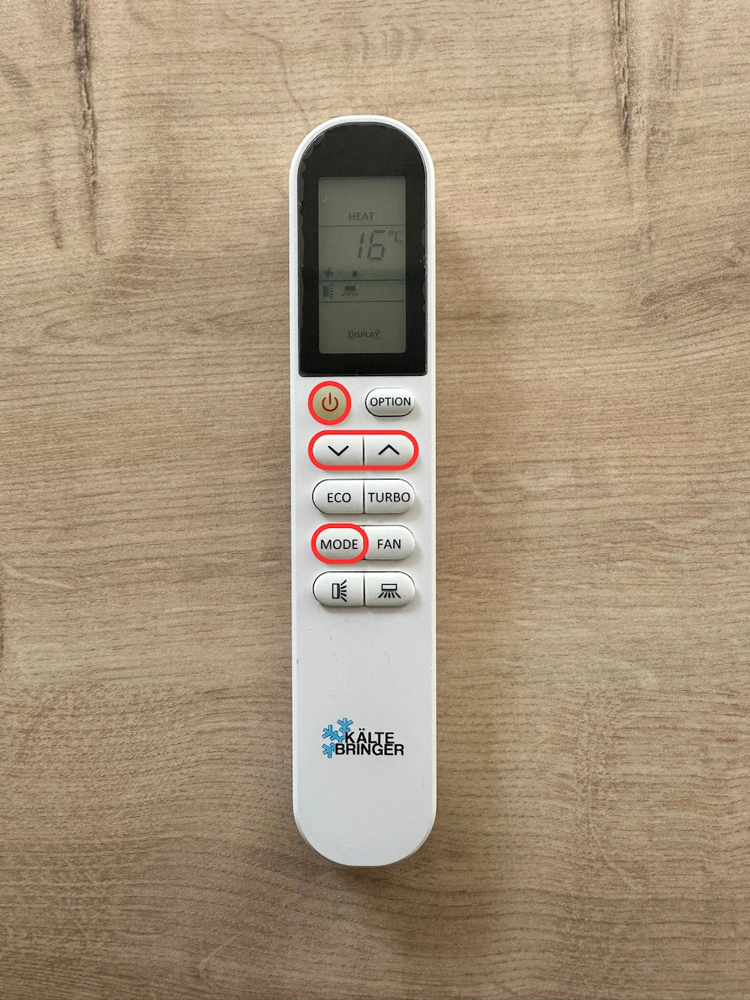

🌡️ Chauffage
Climatisation
Le logement est équipé d'une pompe à chaleur réversible. Suivez ces 3 étapes pour comprendre son fonctionnement.

-
1️⃣ Allumer
- Appuyer sur le bouton ON.
-
2️⃣ Choisir le mode
- Appuyer sur MODE.
- 🔥 HEAT = chauffage
- ❄️ COOL = climatisation
-
3️⃣ Régler la température
- Utiliser les flèches ↑ ↓.